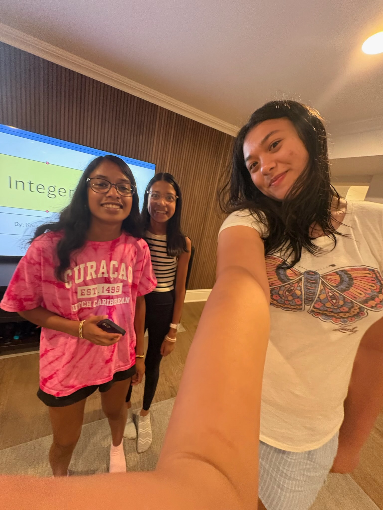
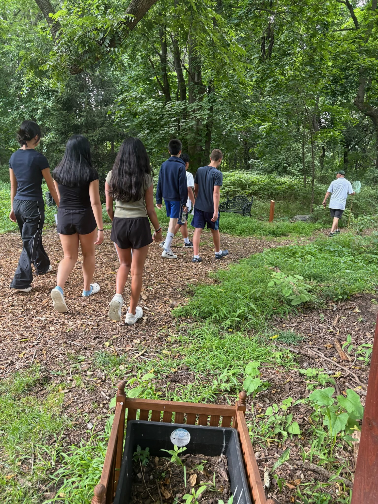

A Free Student-Led Non-profit for Global STEM Access
A student-led nonprofit dedicated to expanding access to STEM education through peer mentorship, structured learning, and 100% free online instruction.

Our Origins
What began as "We Teach Scarsdale" (WTS 2025)—a localized initiative in Westchester County—has evolved into a structured nonprofit organization. Our transition to UN4STEM represents our commitment to scaling peer-led education into a professional and accessible network for all.

Our Experience
With a track record of educating dozens of students in diverse fields ranging from Cellular Biology to Abstract Algebra, we have refined a pedagogical approach that balances academic rigor with student well-being.

The Accessibility Gap
Global Goals
Our work is directly informed by UN Sustainable Development Goal 4: Quality Education. We believe that by providing free resources and peer-led mentorship, we support the global mission to ensure inclusive and equitable education for all, regardless of socio-economic status.
Our Impact
Our Philosophy
We operate on the belief that the "near-peer" model is the most effective way to learn. Because our mentors share a similar academic perspective with their students, they can anticipate points of confusion and provide explanations that resonate far more deeply than traditional lectures.
Looking Forward
As UN4STEM continues to grow, we are focused on expanding both our curriculum and our mentor network while maintaining the accessibility and clarity that define our approach. Our long-term vision is to scale this peer-led model so more students can benefit from personalized, engaging STEM education regardless of background or location.